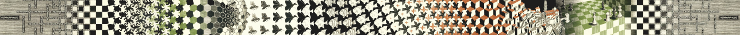
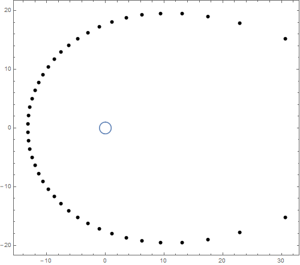
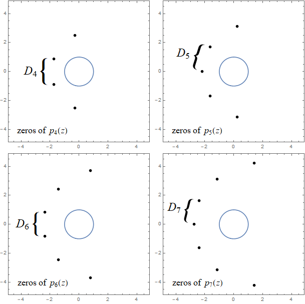
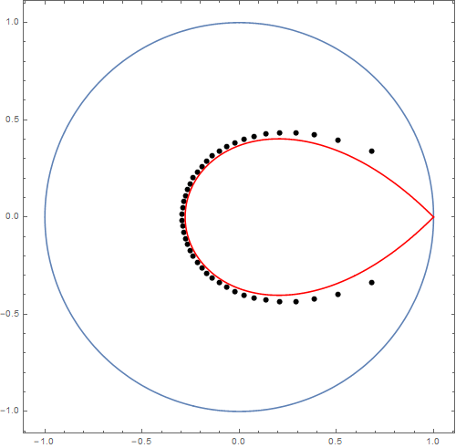
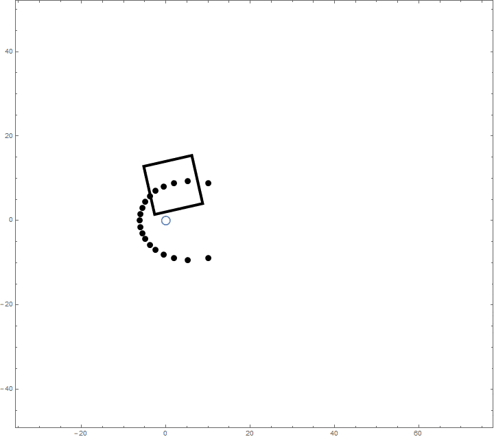
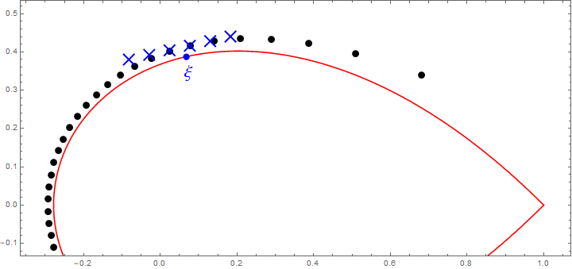

On the distance
between zeros of Taylor polynomials of the exponential function
The exponential function of a complex variable $z$ can be written as
the infinite series
\[
e^z = \sum_{k=0}^{\infty} \frac{z^k}{k!}.
\]
We can then let $p_{n}(z)$ denote the nth partial sum of
this series:
\[
p_n(z) = \sum_{k=0}^{n} \frac{z^k}{k!}.
\]
This polynomial $p_n(z)$ is commonly referred to as the nth
partial sum of the exponential series or the nth
Taylor polynomial of the exponential function.
We can plot the $n$ complex zeros of $p_n(z)$. Here's a plot for $n =
44$ with the unit circle $|z| = 1$ shown in blue for reference.

(The Mathematica code used to produce this image can be found at the
bottom of the page.)
These polynomials (and their zeros) have been studied for quite some
time. In 2005 Stephen M. Zemyan published a very nice paper titled "On the Zeroes of the Nth
Partial Sum of the Exponential Series" in which he gave an overview
of some of the main results in this area and proved several new ones.
He also posed a number of problems, and we aim to address two of those
problems here.
Zemyan's problems
Section 4 of Zemyan's paper explores the spacing of the zeros of
$p_n(z)$.
Looking at the plot above, we can see that the zeros on the left are
closer together than the zeros on the right. For each $n \geq 2$,
Zemyan defined the number $D_n$ to be the smallest distance between the
zeros of
$p_n(z)$.
For example, the zeros of the polynomial $p_2(z) = 1 + z + z^2/2$ are
$z = -1 \pm i$, so the distance between the zeros is $2$, and hence
$D_2 = 2$.
Using numerical methods we can calculate $D_n$ for larger $n$, and
Zemyan includes the first six in his paper: \[ D_2 = 2, \quad D_3
\approx 2.016408, \quad D_4 \approx 1.77948, \] \[ D_5 \approx
1.775241, \quad D_6 \approx 1.676700, \quad D_7 \approx 1.672533. \]

Zemyan notes that $D_n$ seems to decrease for $n \geq 3$,
and in Theorem 4 of his paper
gives an explicit lower bound:
Theorem 4 [Zemyan]. $D_n \geq 0.290444$ for all
$n \geq 2$.
He then poses two problems relating to the spacing of the zeros (Problem 3
and Problem 4 in the paper):
Problem 3 [Zemyan].
Determine the exact value of $\lim_{n \to \infty} D_n$.
Problem 4 [Zemyan].
Prove or disprove: for fixed $n$, the distance between adjacent zeros
of $p_n(z)$ increases as the
real parts of the zeros increase.
Problem 4 restates what we noticed earlier about the zeros, that the
ones on the left are closer together than the ones on the right.
We don't aim to give completely rigorous solutions to these two
problems. Instead we will explore them from an asymptotic perspective,
tackling them with approximations rather than exact formulae. To do
this we'll first need to piece together a few known facts about the
polynomials $p_n(z)$.
The Szegő curve
As Zemyan notes in his paper, Szegő showed in 1924 that the zeros of
$p_n(z)$ grow proportionally to $n$ as $n$ increases. Even more, Szegő
showed that after scaling all the zeros by $1/n$, as $n \to \infty$
they converge to the curve defined by \[ \left| ze^{1-z} \right| = 1,
\quad |z| \leq 1. \] This curve has come to be known as the Szegő curve.
Here's a plot of the zeros of $p_{44}(45z)$ with the Szegő curve shown
in red and the unit circle shown in blue. Compare this with the plot of
the zeros of $p_{44}(z)$ at the top of the page.

Let's call the Szegő curve $S$ for short.
There are two points of $S$ which are of particular interest: the
corner on the right, and the base of the bulb all the way on the left.
The corner is located at $z=1$, but it's a little trickier to find
where the base of the bulb is located.
The base lies on the real axis, so we'll write $z=x$ to indicate that
it's a real variable. We also note that $x$ is negative. By
using these facts in the definition of $S$ we get that \[ 1 = \left|
ze^{1-z} \right| = -xe^{1-x}, \] and so \[ -xe^{-x} = 1/e. \] Calling
on our friend the Lambert W
function, we can solve this equation to get $-x = W(1/e)$ and hence
$x = -W(1/e)$. We have proved the following Lemma.
Lemma 1. The corner of $S$ is located at
$z=1$ and the leftmost point of $S$ is located at $z=-W(1/e)$, where
$W$ is the Lambert W function.
We will also need some way to approximate the zeros. The following
lemma is a bit technical but very cool. The limit in it was essentially
first obtained by Edrei, Saff, and
Varga in their monograph Zeros of Sections of Power Series.
A proof of a more general version of it can be found in chapter 4 of my PhD thesis. I may
eventually write another note here giving a direct proof of this
specific case, but for now let's just accept the result and see where
it gets us.
Lemma 2. Let $\xi \in S$ with $\xi \neq
1$ and define $\tau = \operatorname{Im}(\xi - 1 - \log \xi)$. Define
the sequence $(\tau_n)$ by \[ \tau_n \equiv n\tau \pmod{2\pi}, \quad
-\pi < \tau_n \leq \pi \] and set \[ z_n(w) = n\xi \left(1 +
\frac{\log n}{2(1-\xi)n} - \frac{w-i\tau_n}{(1-\xi)n}\right). \] Then
\[ \lim_{n \to \infty} \frac{p_{n-1}(z_n(w))}{\exp(z_n(w))} = 1 -
\frac{e^{-w}}{(1-\xi)\sqrt{2\pi}} \] uniformly on compact subsets of
the $w$-plane.
How can we interpret this? The main idea is that the argument $z_n(w)$
which gets plugged into the polynomial $p_{n-1}(z)$ is designed so that
it
"tracks" with the zeros of $p_{n-1}(z)$ as $n$ grows. We can illustrate
this with an animation.
In this animation we show the zeros of $p_{n-1}(z)$ as $n$ increases
from
$20$ to $100$. We also draw a rectangle indicating the range of
$z_n(w)$ as $w$ ranges over the square with corners at $\pm 15 \pm 15i$.

We can see that the square follows along with the zeros, staying at
roughly the same place on the arc. The number of zeros in the square is
eventually constant, and
the zeros in the square gradually flatten out into a straight line.
What
Lemma 2 is saying is that, inside any moving square like this one, the
partial sums $p_{n-1}(z)$ look a lot like the function $1-Ce^{-w}$ for
some
constant $C$, so we can approximate the zeros of the former with the
zeros of the latter. We just need to plug the zeros of $1-Ce^{-w}$ back
into the map $z_n(w)$ to get approximations for the zeros of
$p_{n-1}(z)$.
Here's a plot where we've chosen an arbitrary point
$\xi$ (shown in blue) on the Szegő curve $S$ and used Lemma 2 to obtain
approximations for the zeros of $p_{44}(45z)$ near $\xi$. The
approximations are shown as blue crosses. Near $\xi$ the approximations
are very good.

Remark.
Lemma 2 is an example of a scaling
limit.
In general these types of results talk about what happens when you
"zoom in" on interesting features of some complicated quantity. They
say that if you zoom in the right way, you'll find that the landscape
looks a lot like a simpler one you know more about.
We've gathered all the necessary tools so let's get back to Zemyan's
problems.
Addressing the
problems
Let $\xi$ be any point of the Szegő curve $S$ except for its corner
(so $\xi \neq 1$). Using Lemma 2, if $w_1$ and $w_2$ are solutions to
the equation \[ 1 - \frac{e^{-w}}{(1-\xi)\sqrt{2\pi}} = 0, \tag{$*$} \]
then $p_{n-1}(z)$ has zeros of the form \[ z = z_n(w_1) + \epsilon_1(n)
\qquad \text{and} \qquad z = z_n(w_2) + \epsilon_2(n), \] where
$\epsilon_1(n) \to 0$ and $\epsilon_2(n) \to 0$ as $n \to \infty$.
The distance between adjacent roots of equation $(*)$ is $2\pi$, so the
limiting distance between the adjacent zeros of $p_{n-1}(z)$ which are
closest to $n\xi$ is \[ \begin{align} |z_n(w_1) - z_n(w_2)| &=
\left| n\xi \left(1 +
\frac{\log n}{2(1-\xi)n} - \frac{w_1-i\tau_n}{(1-\xi)n}\right) - n\xi
\left(1 +
\frac{\log n}{2(1-\xi)n} - \frac{w_2-i\tau_n}{(1-\xi)n}\right) \right|
\\ &= |w_1 - w_2| \left|\frac{\xi}{1-\xi} \right| \\ &= 2\pi
\left|\frac{\xi}{1-\xi} \right|. \tag{$**$} \end{align} \] If $\xi \in
S$ then $|\xi| = e^{\operatorname{Re} \xi - 1}$, so $|\xi|$ increases
as $\xi$ moves from the leftmost point
of $S$ at $\xi = -W(1/e)$ toward the corner at $\xi = 1$, while $|1 -
\xi|$ decreases. Thus the limiting distance between adjacent zeros,
$2\pi|\xi/(1-\xi)|$, increases as the real part of $\xi$ increases and
is minimized when $\xi = -W(1/e)$.
Zemyan's Problem 4 asks whether the distance between adjacent zeros
increases as the real parts of the zeros increase, and we have shown
that this is, indeed, asymptotically true.
Zemyan's Problem 3 asks about the limit of $D_n$, the minimum distance
between zeros of $p_n(z)$. Equation $(**)$ and the above argument yield
the following result.
Theorem. \[ \lim_{n \to \infty}
D_n = 2\pi \frac{W(1/e)}{1+W(1/e)} \approx 1.368551. \]
As a sanity check, this value is consistent with the values of $D_2,
\ldots, D_7$ and Zemyan's lower bound. Even further, numerical
computation yields $D_{100} \approx 1.399862$ and $D_{200} \approx 1.385674$.
If anyone has made progress on any of Zemyan's other problems I would
love to hear about it. It would be nice to maintain a small repository
of information about them.
Update Feb 8, 2018: The value of $D_{100}$ at the end was computed incorrectly.
This page has been updated with the correct value.
Update Mar 29, 2018: The value
of $D_{200}$ was also computed incorrectly. I've recomputed $D_{100}$
and $D_{200}$ using a different method and I'm pretty sure they're
right now.
The Mathematica notebook (.nb) which I used to create the images in this note can be downloaded here.
Antonio R.
Vargas
February 7, 2018